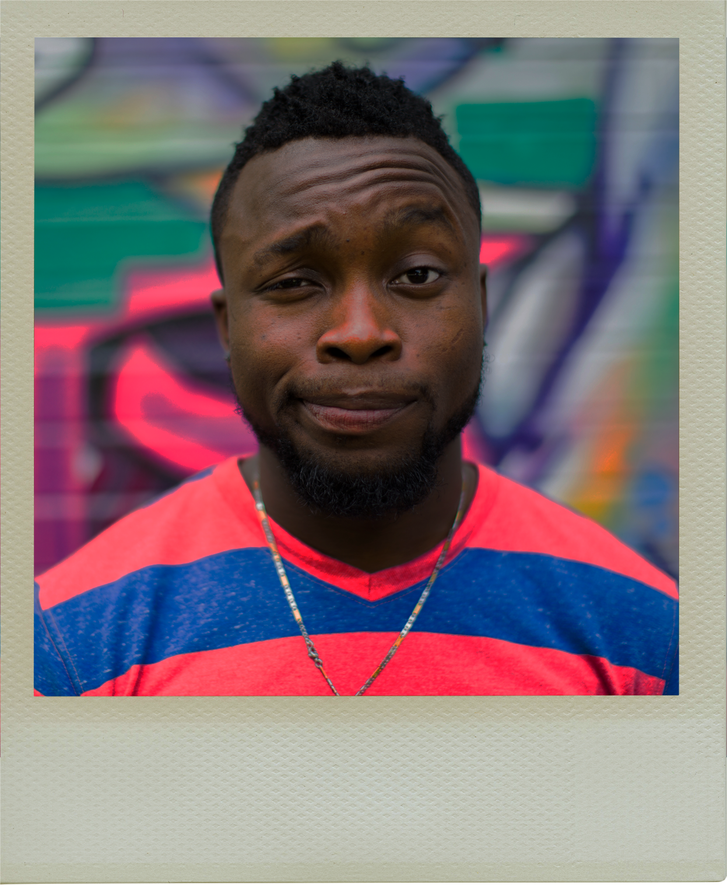
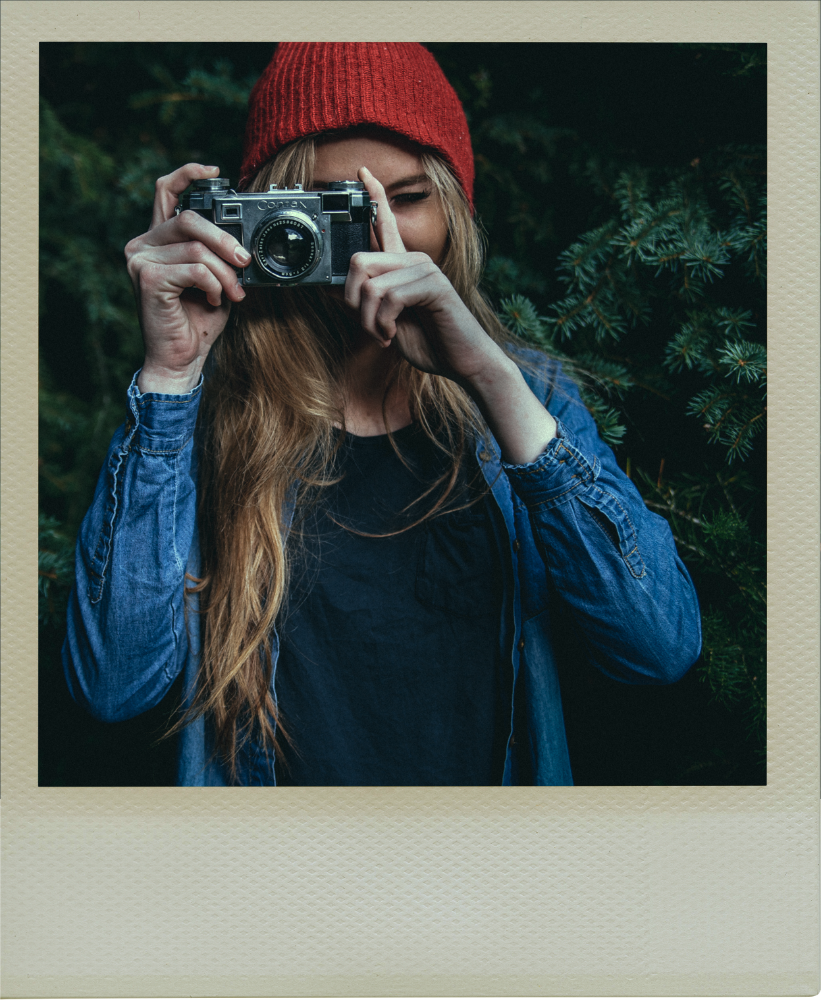
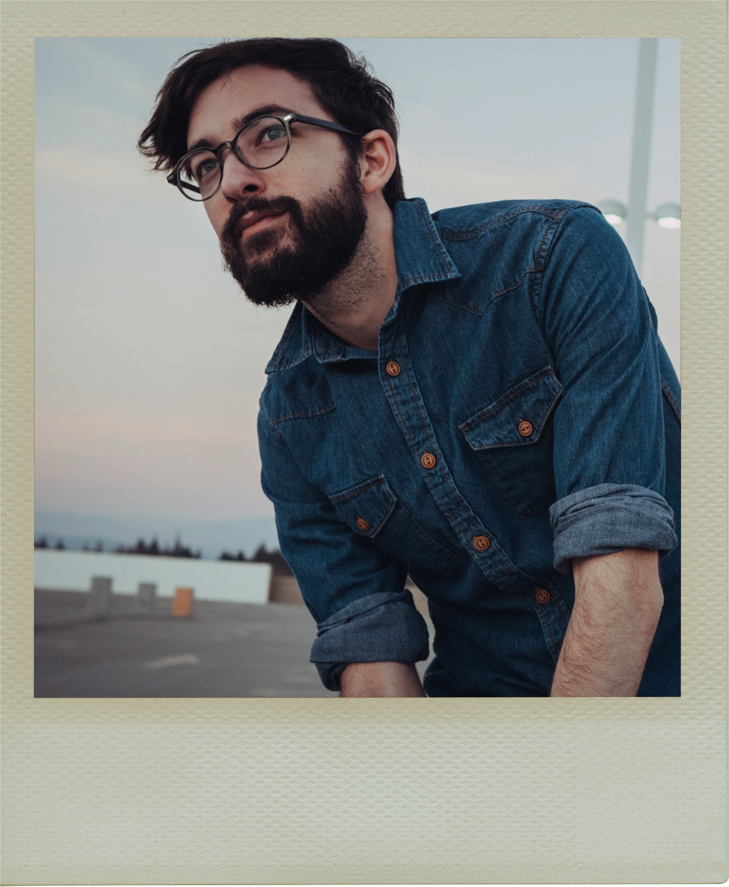

About Us
Established in 2005, Mountain Coffeehouse has striven to provide high quality coffee to the good people of Bend, Oregon. After searching the globe for the most distinct, amazing coffees we have narrowed our focus to our four favorite origins: Ethiopia, Kenya, Colombia and Guatemala. From these origins, we seek out coffees that are sweet, clean, and complex. Integrity and care are put into every step of the espresso process, from cherry to cup. Our mission as a small batch roaster is to provide you with seasonal, delicious coffees that will delite your palate and intrigue your mind.
The Team
Brian • Owner, Roaster, Barista
Brian is the founder of Mountain Coffeehouse and has lived in Bend his whole life. His admiration of coffee
and deep respect for the roasting process have lead him pursue a coffee master status, earning it in 2012.
When Brian isn't roasting or pouring macchiatos, he's often hiking the hills surrounding Bend, enjoying nature
to the fullest.
Emily • Barista
Emily studies philosophy at OSU Cascades Campus and is a traveler of the world. Throughout her childhood,
she has maintained a deep interest for the way we consume coffee—from farm to table. Emily brings
that fascination with her to Mountain every day, inspiring her to create truly delicious works of art.
Joshua • Roaster, Barista
Joshua grew up with Brian and has shared a fondness for roasting great coffee. Joshua holds degrees in outdoor
leadership and education. He enjoys outdoor activities, and makes time to explore Smith Rock whenever he can.
Joshua is a bicycling fanatic, and co-owns Rusty Wheels just down the street from Mountain Coffehouse.